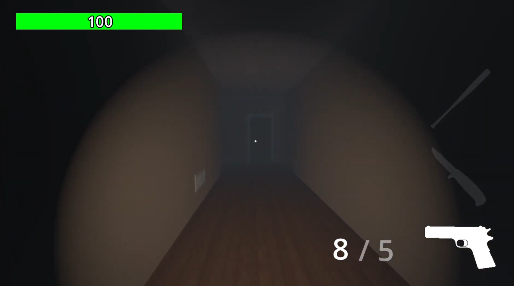

Speden spelit -nopeustesti
loka–joulu 2023
Tehtävänä oli rakentaa kuvaa muistuttava toteutus Arduino-mikrokontrollerista ja led-valoista, näyttäen tuloksia 7-segmenttinäytöltä. Valot syttyvät satunnaisesti ja pitäisi painaa valoa vastaavaa nappia (kuvasta poiketen oli valot ja napit erikseen).
Aina kun painetaan oikeaa nappia, lisätään yksi piste tulokseen ja näytetään se reaaliaikaisesti 7-segmenttinäytöllä.
Virtuaalinen pankkiautomaatti
maalis–touko 2024
Toteutimme kuvan mukaisen virtuaalisen pankkiautomaatti-simulaation, jossa tilille päästään RFID-lukijan avulla. Käyttöliittymä on tehty Qt Widgetillä ja tiedot haetaan MySQL-tietokannasta HTTP-pyyntöjen avulla.
Projektin Github: https://github.com/vsuho/Virtual-ATM-simul
Leffasivu
loka–joulu 2024
Toteutimme leffasovelluksen Reactilla, jossa voi muun muassa selata elokuvia erinäisillä kriteereillä. Sovelluksesta voi myös katsoa Finnkinon näytösaikoja, jotka haetaan Finnkinon APIsta.
Sovellukseen voi luoda oman tilin, jolla voi kirjoittaa esimerkiksi arvosteluja elokuville. Arvostelut ja käyttäjätiedot tallennetaan MySQL-tietokantaan. Backend tehtiin Node.js:llä.

Projektin Github: https://github.com/movieApp-19
Terveyssovellus
maalis–touko 2025
Toteutimme mobiilisovelluksen React Nativella ja Expolla, jossa on ominaisuutena askeleiden näyttäminen, unen ja liikunnan seuranta, BMI- ja kalorilaskuri, sekä ruokapäiväkirja, hyödyntäen Finelin APIa ravintotietojen saamiseen.
Tiedot tallennettiin Firestoreen.

Projektin Github: https://github.com/Mobile-development-R19/Health-app
Godot-pakopeli
loka–joulu 2025
Toteutimme Godotilla yksinkertaisen 3D-pakopelin, jossa pelaajan tehtävänä on päästä pois talosta. Kellarikerroksesta löytyvällä avaimella pääsee 1. kerrokseen, josta on myös löydettävä avain jolla pääsee pois talosta, jolloin peli päättyy voittoon. Talosta voi löytää aseita ja ensiapua. Pelissä on vihollisia, joita pelaajan tulee välttää tai eliminoida löytämillään aseilla.
Pelilogiikka on toteutettu GDScriptillä.

Projektin Github: https://github.com/Godot3D-Peliprojekti/3DGodot
Demovideo: YouTube
Haltian IoT Platform Hacking
helmi–huhti 2026
Yhdessä OAMKista koostuvien kansainvälisten opiskelijoiden kanssa harjoitimme eettistä hakkerointia Haltian IoT-alustalla. Projekti sisälsi sekä black box- että white box -vaiheen. Black box -vaiheessa keräsimme ulkopuolelta kaiken mahdollisen tiedon, minkä saimme irti Haltian järjestelmästä. White box -vaiheessa pääsimme kirjautumaan demotunnuksilla alustalle.
Molemmissa vaiheissa etsimme haavoittuvuuksia mm. OWASP Web Security Testing Guiden avulla.
Salassapitosopimus kieltää tulosten ja yksityiskohtien kertomisen. Haltian oli kuitenkin tyytyväinen projektin tuloksiin ja työstä on sertifikaatti olemassa, jonka voin jakaa tarvittaessa.
Software Hardening for Developers
touko–heinä 2026
OAMKin itsenäisesti tehtävä, AI-avusteinen oppimispäiväkirjamuotoinen kesäprojekti. 10 op (270h).
Sisältää kahdeksan kappaletta, joissa kaikissa on softaturvallisuuteen liittyviin kysymyksiin vastauksia. Pääosin hands-on -tyylinen kurssi, jossa VM Linuxilla kokeilin työkaluja ja mm. aiheutin haavoittuvuuksia koodiin, jotka sitten korjasin.
Aiheita kurssilla:
- Turvallinen kehitysympäristö
- Memory safety (C/C++)
- Ohjelmointikielikohtainen software hardening
- OS hardening
- Cryptography, secrets ja authentication koodissa
- Supply chain security
- Software hardening -työkalut
Oppimispäiväkirja: Katso PDF
Opettajan kurssisivu: tl.oamk.fi/ai
Building a Custom Linux with Yocto
heinä–syys 2026
OAMKin itsenäisesti tehtävä, AI-avusteinen oppimispäiväkirjamuotoinen kesäprojekti. 10 op (270h).
Sisältää seitsemän kappaletta, joiden tehtävien avulla pala palalta rakensin pienen Yocto Poky Linux-imagen.
Aiheita kurssilla:
- Embedded Linux landscape
- Yocto Fundamentals: Poky, BitBake, Layerit, Reseptit
- Imagen kustomointi: Reseptit ja imagen ominaisuudet
- Linux vanilla kernelin sourcen konfigurointi ja buildaus
- Kernelin muokkaus: patchit, out-of-tree moduulit
- Boot metodit: bootloaderit, initramfs
- Custom imagen ajaminen: QEMU, KVM, Windowsin VM
Oppimispäiväkirja: Katso PDF
Opettajan kurssisivu: tl.oamk.fi/custom_linux/